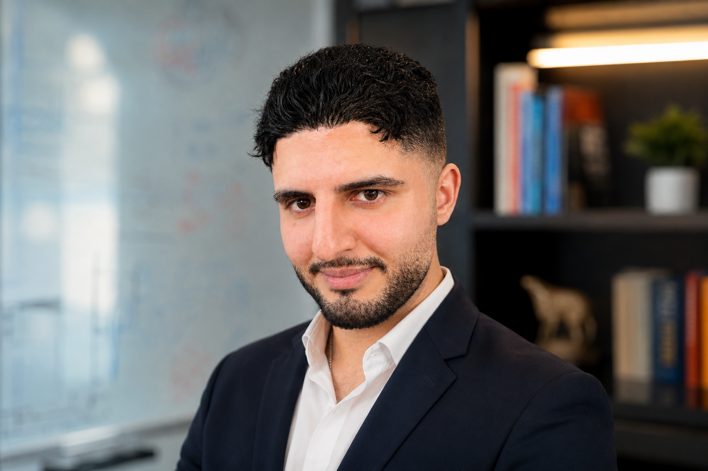

01 · Identifiability
Optimal experimental design
Quantifying the information content of loading conditions and selecting deformations that improve multiparameter hyperelastic identifiability.
Related publication →I develop mechanics-informed computational methods for recovering spatially resolved soft-tissue properties from deformation and medical-imaging data.

My work focuses on a central question: how can deformation measurements be converted into reliable, physically interpretable maps of nonlinear tissue mechanics?
Quantifying the information content of loading conditions and selecting deformations that improve multiparameter hyperelastic identifiability.
Related publication →Recovering voxel-wise nonlinear material parameters from volumetric deformation fields while enforcing equilibrium and boundary reactions.
PI-UNet paper →Building noise-aware maps of where different constitutive models are distinguishable, compatible, or observationally equivalent.
Research in progress →A developing research program linking information-aware experiment design with mechanics-constrained nonlinear inverse characterization.
Amirreza Asadi and Kaveh Laksari · Annals of Biomedical Engineering
Amirreza Asadi and Kaveh Laksari · Journal of the Mechanical Behavior of Biomedical Materials
Recent research and professional milestones.
I am a PhD candidate in Mechanical Engineering at UC Riverside, working at the intersection of computational mechanics, medical imaging, inverse problems, and machine learning.
My long-term goal is to develop quantitative, mechanics-based imaging methods that move beyond simplified stiffness estimates and recover spatially resolved nonlinear constitutive information.
For research discussions, collaborations, or internship opportunities, reach me through email or the profiles below.